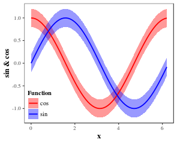
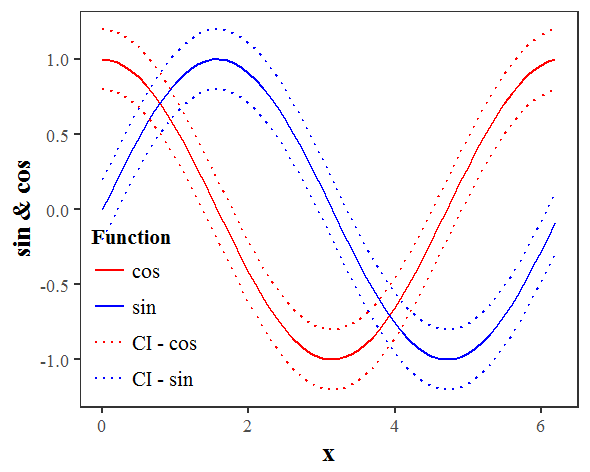
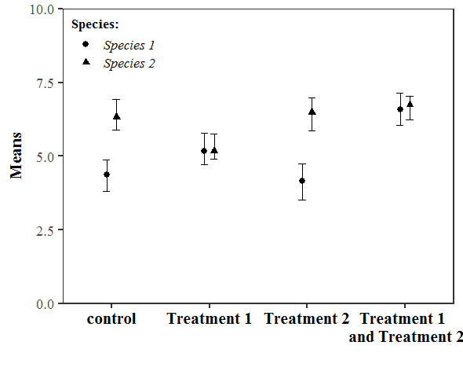
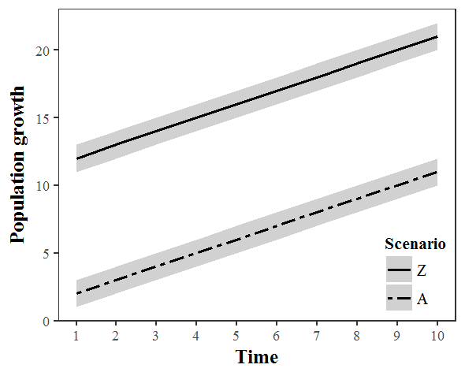
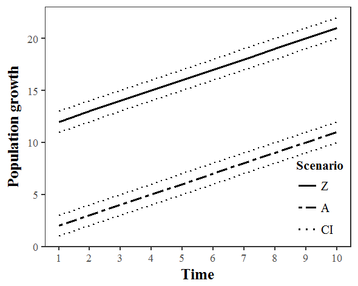
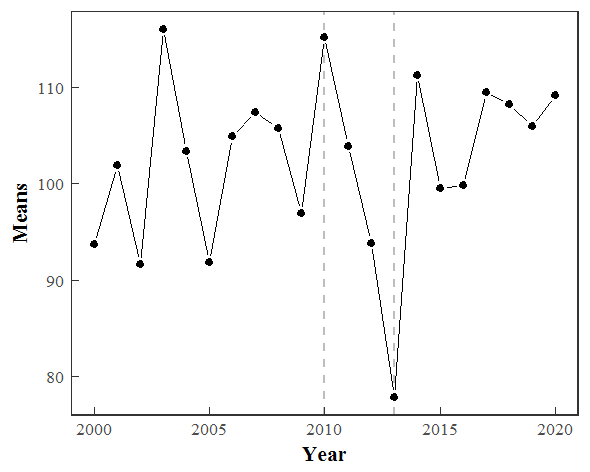
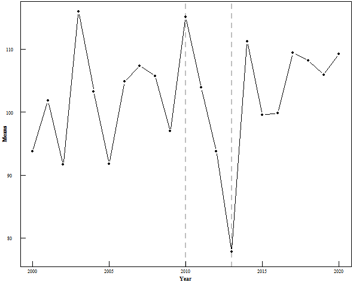
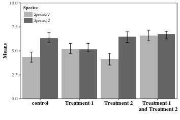

Scripts & graph gallery
Small tutorials and plotting scripts I wrote between 2017 and 2020, mostly while answering questions or figuring something out for my own work. They are older, but people still find them useful, so they stay here.
More writing on my WordPress blog and in my Stack Overflow answers.
Tutorials
-
Use
geom_rectorgeom_polygonfrom ggplot2 for shading effects - Pacific-centred map with Voronoi tessellation and repelled text labels
- Pixel-based classification of Sentinel-2 images with caret: Random Forests, SVM and neural networks
-
An interactive PCA biplot with
ggbiplotandplotly - Coefficient of determination for the one-to-one line
-
Visualising and annotating a phylogenetic tree with
ggtree - Digitise graphs with R: import and edit graphs from PDF files
Graph gallery
Each picture links to the R script that draws it. The coding style varies, because each one was an experiment with a new package or idea.
Maps

Choropleth world map tmap · interactive version 
World cities, Eckert IV projection ggplot2 & ggrepel 
World map, Robinson projection ggplot2 
Pacific-centred world map ggplot2 
Shifting the central meridian ggplot2 & maptools
Line and dot plots

Coloured confidence bands ggplot2 
Coloured confidence lines ggplot2 
Dot plot with confidence intervals ggplot2 
Simple confidence bands ggplot2 
Simple confidence lines ggplot2 
Line plot with inward ticks ggplot2 
Line plot with inward ticks base R
Barplots

Barplot with error bars base R 
Dodged barplot ggplot2
Other

Annotated phylogenetic tree ggtree 
Tree with clade bars ggtree